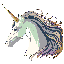
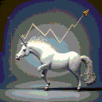

Unicorn Data Analysis

Video Game Data Analysis
Unicorn Data Analysis

As a data analyst for Unicorn Companies, I was responsible for cleaning up the code in Python's pandas database and organizing the data using SQL. My analysis focused on answering several key questions, including the distribution of unicorn companies by industry, funding, geographic location, and changes in the number of unicorns over time.
Using the insights gained from this analysis, I created a visually appealing dashboard using Tableau that provided a user-friendly interface for exploring the data. The dashboard allowed stakeholders to easily identify trends and patterns in the data, which could be used to inform strategic decision-making.
Overall, my work on this project demonstrated my ability to work with large and complex datasets, apply advanced analytical techniques, and communicate insights effectively using data visualization tools. I believe that these skills, combined with my passion for data-driven decision-making, make me an ideal candidate for any data analyst position.
Using the insights gained from this analysis, I created a visually appealing dashboard using Tableau that provided a user-friendly interface for exploring the data. The dashboard allowed stakeholders to easily identify trends and patterns in the data, which could be used to inform strategic decision-making.
Overall, my work on this project demonstrated my ability to work with large and complex datasets, apply advanced analytical techniques, and communicate insights effectively using data visualization tools. I believe that these skills, combined with my passion for data-driven decision-making, make me an ideal candidate for any data analyst position.